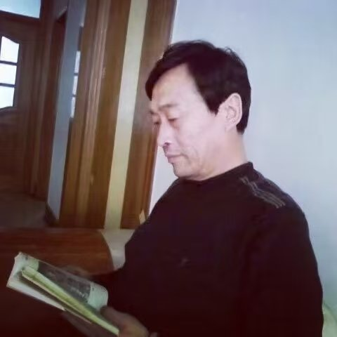

— 完 —

公明，陕北横山人，教书一生，闲时执笔。
「故乡，像母亲一样，用呆滞而混浊的目光，为一拨一拨的游子们送行。 虽然自己万般寂寥，但仍然坚信：她的孩子们走出去会比留在自己身边过得更好。」
— 公明 · 《故乡》
少年时长于硷畔窑前，亲见电影队下乡、盲艺人说书、县剧团唱戏，记忆里满是黄土与烟火。
本村念到初中毕业，第一次远行去响水赴中考；考入横山中学，后于绥德继续学业。
恢复高考后被分配回响水中学任教，校长称其为"恢复高考后分来的第一个大学生"。
长期从事教育工作，与学生、讲台、书本相伴大半生。日间教书育人，闲时观察人事，是日后写作的底气。
第一篇文字推送，从此在文字里安身。题材从故乡风物起笔，逐渐扩至童年、人生、读史。
累计 102 篇，约十三万字。继续在文字里安身。
新作首发于公众号「公明随笔」。